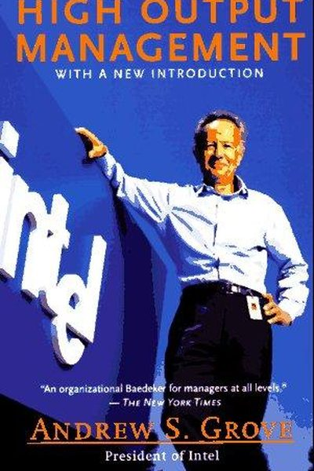

Library › Business & Startups
High Output Management — Summary & Key Lessons

The legendary Intel CEO's manual on management — still the bible of Silicon Valley, from a man who led with numbers and heart.
📖 OPEN THE FULL INTERACTIVE BREAKDOWN →🌐 Read it in Hindi, Hinglish, Gujarati, Tamil & 22 more languages — free, with audio.
💡 The Big Idea
Andy Grove — Intel's legendary CEO — defines management brutally simply: a manager's output is the output of the organizations under their command. Everything else follows: maximize leverage (do things that multiply others' work), run meetings that produce decisions, give reviews that are honest and specific, and set 'task-relevant maturity' to know when to manage tightly vs loosely. Written in 1983, it remains the most practical management book ever.
🧠 The 5 Key Lessons
Lesson 1: Your Output = Your Team's Output
The Basics of Management
A manager's personal output is not their own work — it's the output of the team plus the output of the neighboring teams they influence. This reframe changes everything: instead of asking 'am I working hard?', ask 'is my team producing more because of me?' If not, you're not managing.
📖 Example: Grove tells of engineers promoted to management who kept doing engineering and failed — until they understood their new output was the team's delivery, not their code. Read the full example →
⚡ Do this: Write your job as: 'My output = the output of ___.' If you can't name the team and the metric, you don't know your job yet.
Lesson 2: Leverage: The Manager's Force Multiplier
Managerial Leverage
Every manager activity has leverage — the ratio of output produced per unit of your time. High-leverage: training, hiring, setting direction, one-on-ones that unblock a whole team. Low-leverage: doing your subordinates' work, over-supervising. The manager's job is to shift time toward high leverage.
📖 Example: Grove's math: a 1-hour training that improves 10 people's performance by 1% for a year is enormous leverage. A meeting that unblocks 8 people for a week beats 8 hours of solo work. Read the full example →
⚡ Do this: Audit your last week in 30-minute blocks. Rank each block by leverage. Move one hour from low to high leverage next week.
Lesson 3: Meetings Are Where Work Happens — Run Them Right
Meetings
Grove divides meetings into process meetings (regular, standing) and mission-oriented meetings (to solve a specific problem). The rules: process meetings need agendas and on-time starts; mission meetings need a clear owner and a decision or action as the output. A meeting without a decision is a waste of everyone's leverage.
📖 Example: Intel's famous one-on-ones: 30-60 minutes weekly, agenda owned by the subordinate, focused on their problems and feelings — the single highest-leverage meeting in the company. Read the full example →
⚡ Do this: Schedule your next 1:1 with a direct report (or your boss) with THEIR agenda, YOUR questions, and a decision-or-action ending.
Lesson 4: Performance Reviews: The Feedback Engine
Performance Reviews
Grove's review doctrine: reviews are the most painful but most important management duty. Rules: deliver in writing first, focus on performance against a few key objectives (not personality), be honest about weaknesses with specific examples, and remember the goal is to improve future output, not justify past pay.
📖 Example: Grove insisted on writing out reviews and reading them in person — 'it's not an act of criticism, it's an act of teaching'. The best reviews he ever received hurt a little and helped a lot. Read the full example →
⚡ Do this: Write a 'mini review' of your own last 30 days: 3 things you did well, 2 things to fix, each with a specific example. Do it monthly.
Lesson 5: Task-Relevant Maturity: Manage by Situation
Managing the Organization
Grove's situational leadership: the right management style depends on the subordinate's task-relevant maturity. Low maturity → structured, directive, 'what to do' supervision. High maturity → delegating, minimal supervision, goals only. Mismanagement = micro-managing experts or abandoning beginners.
📖 Example: A new hire needs weekly check-ins and explicit instructions; a senior engineer who has shipped ten products needs objectives and space. Grove managed each differently — the common mistake is treating everyone the same. Read the full example →
⚡ Do this: For each person you work with (including yourself), ask: what's their maturity on THIS task? Adjust your supervision style to match — today.
✅ 5-Step Action Plan
- Write your output statement: 'My output = ___'.
- Do a leverage audit of last week; shift one hour.
- Run one 1:1 with the other person's agenda and a decision ending.
- Write a monthly mini-review with specific examples.
- Match your supervision style to task-relevant maturity.
💬 Best Quotes from High Output Management
- “The output of a manager is the output of the organizational units under his or her command.”
- “The most important thing a manager does is allocate his or her time — it's the one resource you can't replenish.”
- “Training is the highest-leverage activity a manager can do.”
Interactive version: mark lessons as read, listen in your language, share quote cards.